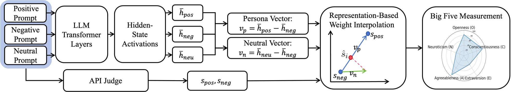
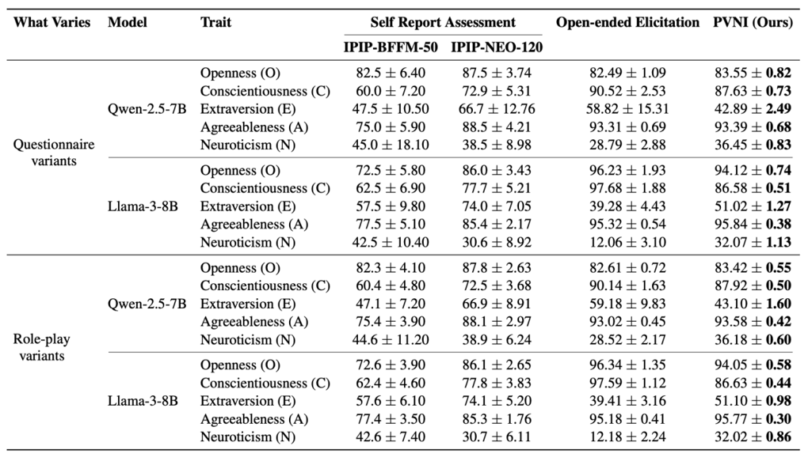
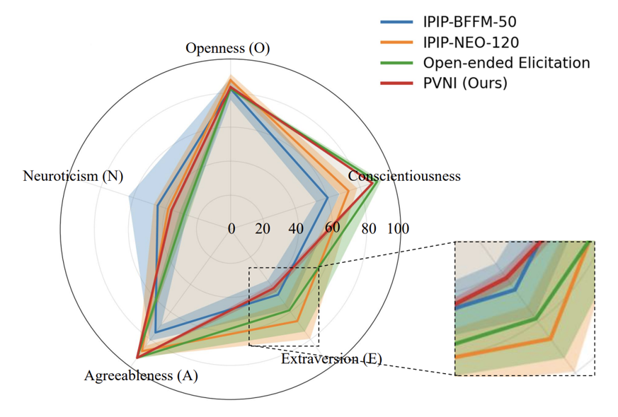

Personality evaluation helps characterize behavioral tendencies of large language models beyond task accuracy, but existing protocols are often unstable. Self-report questionnaires are sensitive to wording changes, while open-ended elicitation remains dependent on prompt framing and external judging. As a result, measured personality scores may reflect surface prompt responses rather than stable internal tendencies.
We propose Persona-Vector Neutrality Interpolation (PVNI), a representation-based method for stable and explainable Big Five / OCEAN evaluation. PVNI constructs a personality direction from positive and negative persona prompts in the hidden-state space, then projects a neutral representation onto this axis to estimate a trait score. Across multiple LLMs, PVNI consistently achieves much lower prompt sensitivity while preserving strong agreement with existing personality measurement protocols.
Existing personality measurements for LLMs mainly rely on output text. In questionnaire-based protocols, the model directly selects Likert-style answers; in open-ended elicitation, a judge model scores free-form responses. Both approaches can vary substantially under prompt rewrites or lightweight role-play changes.
Our goal is to obtain personality scores that are stable, explainable, and comparable across different prompting conditions.
PVNI builds hidden-state persona directions from positive and negative prompts, then estimates the neutral trait score through representation-based interpolation.

The main empirical finding is that PVNI has the lowest standard deviation across prompt variants, models, and traits, indicating much better stability than questionnaire-based or open-ended baselines.
The table below reports the quantitative results. The radar plot further illustrates that PVNI maintains a comparable trait profile while showing a narrower uncertainty band.


@inproceedings{ma-etal-2026-stable,
title = {Stable and Explainable Personality Trait Evaluation in Large Language Models with Internal Activations},
author = {Ma, Xiaoxu and Zhang, Xiangbo and Weng, Zhenyu},
booktitle = {Findings of the Association for Computational Linguistics: ACL 2026},
year = {2026},
pages = {16322--16340},
url = {https://aclanthology.org/2026.findings-acl.803/}
}